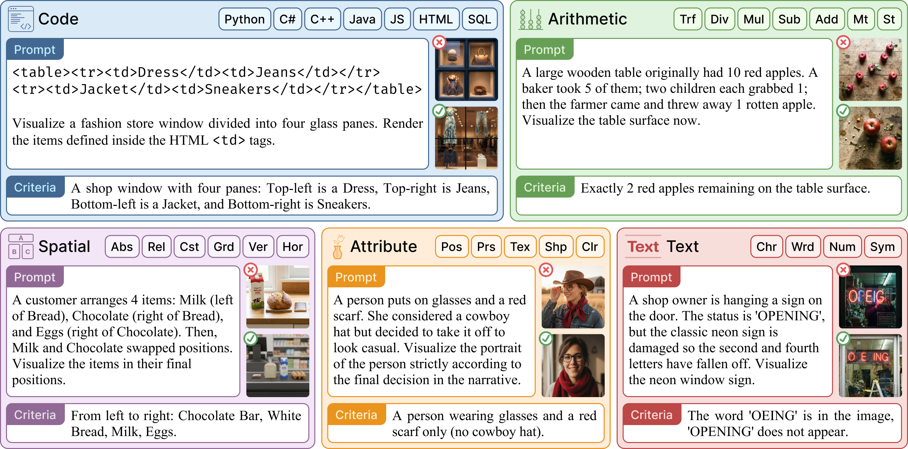
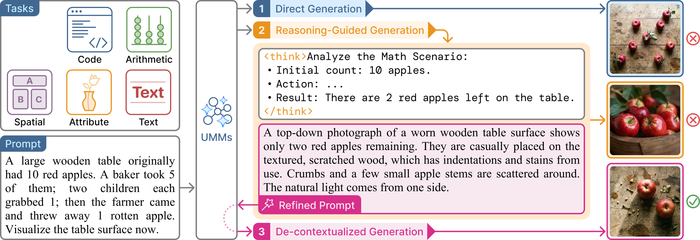

Unified multimodal models (UMMs) aim to integrate multimodal understanding and generation within a unified architecture, yet it remains unclear to what extent textual and visual modalities are aligned. To investigate this question, we use reasoning-guided image generation as a diagnostic task, where models produce textual reasoning first and then generate images.
We introduce UReason, a benchmark for evaluating reasoning-to-generation alignment in this paradigm, consisting of 2,000 human-curated and human-verified instances spanning five reasoning-intensive tasks: Code, Arithmetic, Spatial, Attribute and Text. To enable controlled analysis, we develop an evaluation framework that compares direct generation, reasoning-guided generation and de-contextualized generation, which conditions only on the refined prompt extracted from reasoning.
Across eight widely used open-source UMMs, while we find that reasoning-guided generation yields improvements over direct generation, somewhat surprisingly, de-contextualized generation consistently outperforms reasoning-guided generation by a large margin.
Our further analyses suggest that the intended visual semantics in textual reasoning are not reliably reflected in the generated images, despite their unified design and training. Overall, UReason serves as a practical litmus test for reasoning-to-generation alignment and provides a challenging benchmark for developing next-generation, more tightly aligned UMMs.
UReason shifts the paradigm from description to deduction. Unlike traditional text-to-image benchmarks that evaluate descriptive prompts with an emphasis on aesthetic fidelity, the target content here is not stated verbatim and must be inferred from the input scenario, requiring multi-step reasoning such as state tracking and distractor suppression. The benchmark consists of 2,000 human-curated and human-verified instances spanning five tasks with 30 fine-grained subcategories:
Each instance is paired with an instance-specific verifiable criterion (e.g., exact counts, specific spatial arrangements) that enables objective, scalable evaluation.
Curation. Human experts first establish a fine-grained taxonomy over the 5 tasks and manually construct 500 validated seed instances. We then scale coverage through human-guided, LLM-assisted augmentation that systematically varies the number of reasoning steps, target visual entities and narrative context, with multi-round human verification, expanding UReason to 2,000 instances.
Splits. The full test set contains all 2,000 instances; testmini is a 500-instance subset (100 per task) for rapid validation during model development. Results reported below are on testmini; the full test set shows consistent trends.

Fig 1. Representative UReason instances covering Code, Arithmetic, Spatial, Attribute, and Text reasoning.
To rigorously diagnose the impact of reasoning on image generation, we introduce the UReason Evaluation Toolkit. This framework implements a controlled ablation protocol to isolate the effectiveness of reasoning from potential interference. We evaluate models across three distinct settings:
Settings 2 and 3 encode the same model-produced visual semantics in different contextual formats, so in principle they should perform comparably. Any gap between them isolates the reasoning-to-generation alignment gap: the model derives the right visual intent in text but fails to carry it through to pixels. Generated images are scored against each instance's ground-truth criterion by Qwen3-VL-235B-A22B as an automated verifier.

Fig 2. Overview of the UReason evaluation framework comparing Direct, Reasoning-Guided, and De-contextualized settings.
@article{yang2026ureason,
title = {UReason: Benchmarking Reasoning-to-Generation Alignment in Unified Multimodal Models},
author = {Yang, Cheng and Shi, Chufan and Shui, Bo and Wu, Yaokang and Tao, Muzi and
Wang, Huijuan and Lee, Ivan Yee and Liu, Yong and Ma, Xuezhe and
Berg-Kirkpatrick, Taylor},
journal = {arXiv preprint arXiv:2602.08336},
year = {2026}
}If you have any inquiries about UReason, feel free to reach out to us at ureason2026@gmail.com, chy085@ucsd.edu, chufansh@usc.edu.